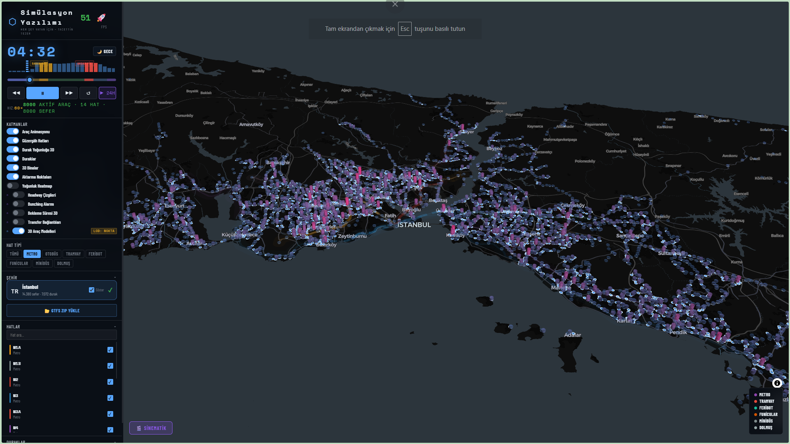

Tek GTFS Akışı
Upload-first model ile aynı anda tek veri seti yüklenir. Veri hazır olunca harita ekranına geçilir.
Upload-first model ile aynı anda tek veri seti yüklenir. Veri hazır olunca harita ekranına geçilir.
Headway, bekleme, yoğunluk ve kapsama katmanları aktif veri üzerinden filtrelerle birlikte çalışır.
HTTPS linkten GTFS ZIP indirme, yerel dosya yükleme ve paketleme akışı masaüstü odaklı korunur.
Ekran Görünümü

Özellikler
Dokümanlar